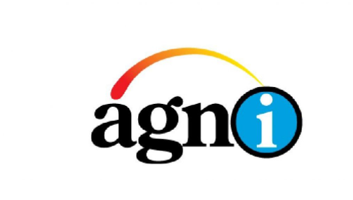

Dhrubo Ratul
Basak
Data Scientist & Network Engineer
Transforming complex data into actionable insights — bridging the worlds of machine learning and robust network infrastructure.
Govt. of India

01. About Me
Hi there! I'm Dhrubo — a Data Science student at TU Dortmund with roots in Bangladesh and a journey that has taken me across India, and now into the heart of Germany's tech landscape.
I don't just work with data — I ask the right questions about it. My approach combines curiosity-driven analysis with engineering discipline: whether I'm building ML pipelines, debugging a network fault, or setting up a self-hosted server at home, I bring the same methodical thinking and genuine passion for problem solving.
Away from the terminal, I enjoy exploring new cultures (having lived in 3 countries), participated in international competitions, and served as a UN delegate. These experiences have shaped me into someone who thrives in diverse, fast-paced environments.
🌐 Languages
02. Education
TU Dortmund University
M.Sc. Data Science · Dortmund, Germany
Currently in the first semester — focusing on statistical learning, machine learning algorithms, and data engineering foundations.
Gujarat Technological University
B.E. Computer Engineering · India
- Awarded the prestigious ICCR International Scholarship (Govt. of India)
- Specialized Minor Degree in Global Citizenship & Personality Development
Birshreshtha Munshi Abdur Rouf Public College
Higher Secondary Certificate (HSC) · Dhaka, Bangladesh
Completed Higher Secondary education with a focus on Science stream.
03. Experience
Junior Network Engineer (NOC)
Agni Systems Limited · Bangladesh

- Monitored and troubleshot network issues using MikroTik, Cisco, and other routing devices to ensure stable connectivity.
- Diagnosed and resolved network outages and connectivity issues efficiently.
- Provided technical support to corporate clients and ensured service reliability.
Data Science Intern
Maxgen Technologies Pvt. Ltd · India
- Fortified core Data Science skills including model selection, data cleaning, and data prediction on real-world datasets.
- Designed and delivered the Heart Disease Prediction project — achieving 91% accuracy using Logistic Regression, KNN, and Random Forest.
- Learned to collaborate effectively within a professional team — managing timelines and building self-confidence.
04. Projects
🛰️ Reverse Proxy · VPN · MikroTik Networking
- Built a secure Jellyfin media server with HTTPS, Cloudflare Tunnel, and Nginx Proxy Manager.
- Simulated ISP networking concepts using MikroTik RouterOS (PPPoE, VPN, QoS).
🤖 Machine Learning · Clinical Data
- Developed an ML model to predict heart disease from clinical patient data.
- Achieved 91% accuracy using Logistic Regression, KNN, and Random Forest.
- Built an interactive Streamlit app for real-time prediction.
05. Skills & Certifications
Programming
Tools
Networking
Data Science
Soft Skills
06. Achievements
ICCR International Scholarship
Awarded by the Indian Council for Cultural Relations under the Government of India for outstanding undergraduate studies.
Minor in Global Citizenship
Specialized Minor Degree in Global Citizenship & Personality Development alongside core engineering studies.
World STEM & Robotics Olympiad
Competed internationally in WSRO — Line Following and Robo Race using embedded systems.
International Model UN (IMUN)
Served as Delegate to Albania — analyzing environmental challenges and proposing global solutions.
07. Let's Work Together
I'm always open to discussing new projects, opportunities in Data Science or networking, or just a good tech conversation.